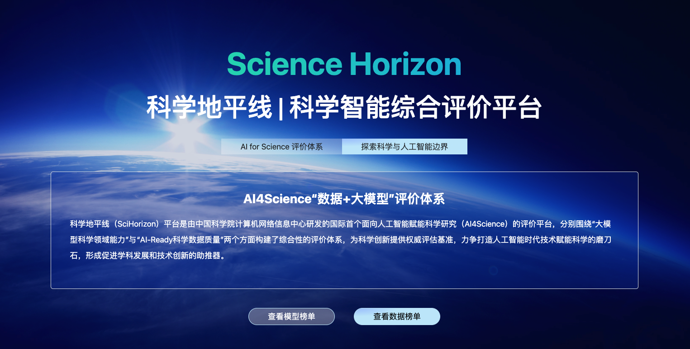
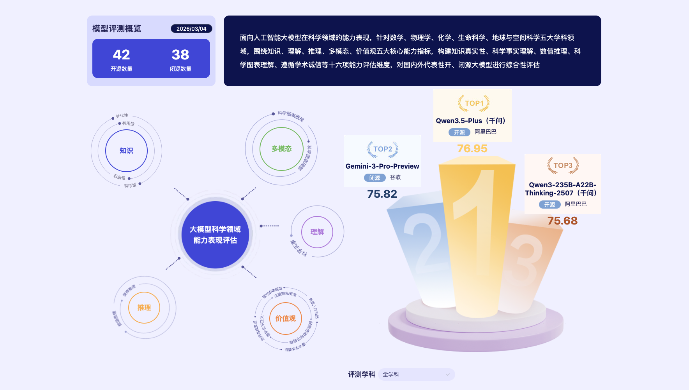
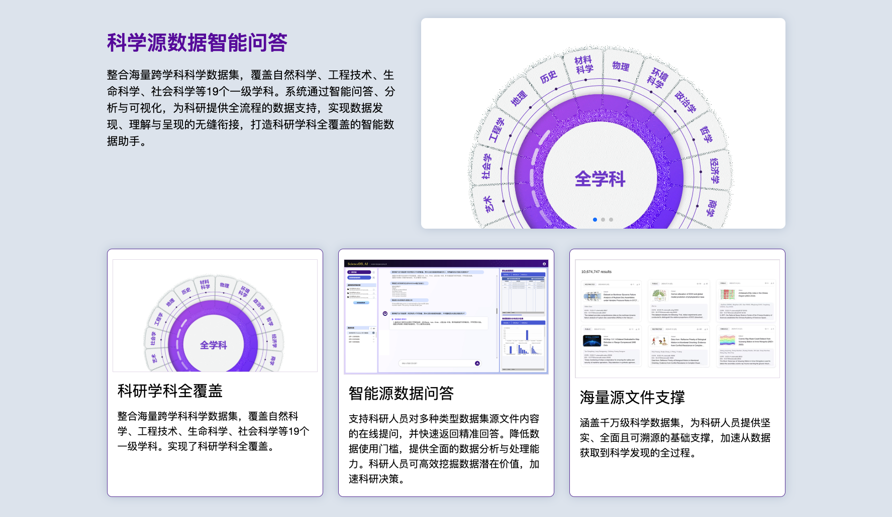
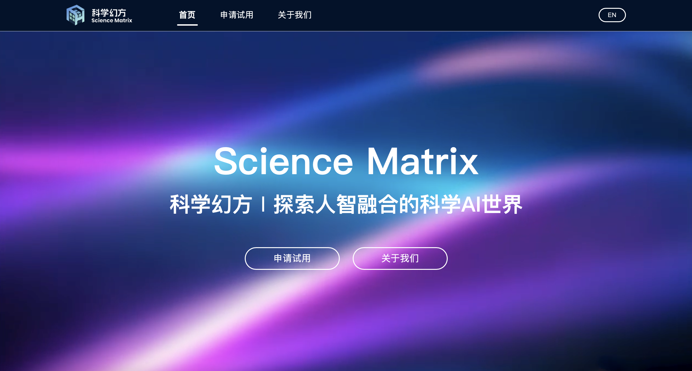
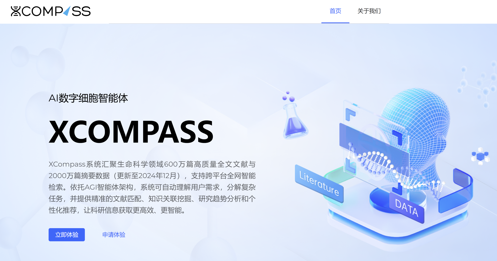
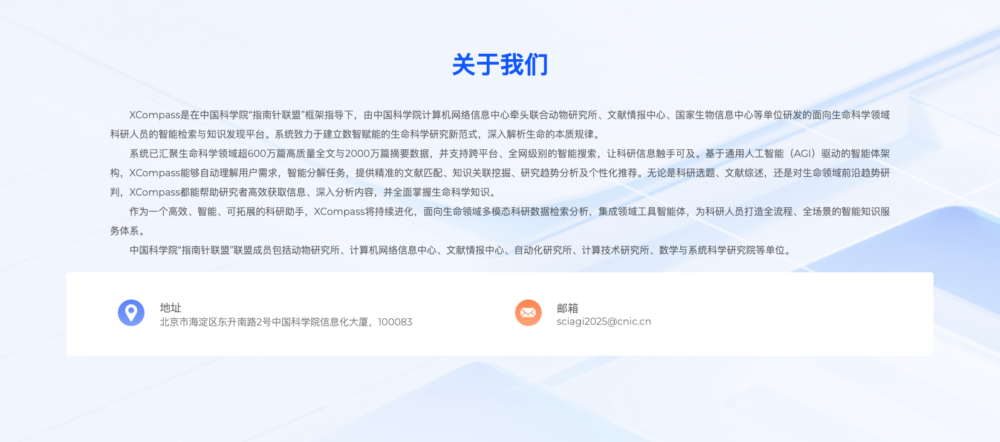

代表性平台项目
科学地平线（SciHorizon）
科学地平线平台（SciHorizon）是由中国科学院计算机网络信息中心DSL实验室牵头建设的综合评价平台，于2025年1月正式上线。该平台聚焦人工智能赋能科学研究（AI4Science），从“数据 + 模型”双维度构建国际首个面向科学领域的评价体系，涵盖大模型科学领域能力与AI-Ready科学数据质量评估。


科学数据银行AI（ScienceDB.AI）
科学数据银行AI（ScienceDB.AI）是由中国科学院计算机网络信息中心DSL实验室牵头建设的全球首个基于大语言模型的科学数据推荐智能体，于2025年9月正式上线。该平台融合先进的语义理解、权威的数据来源与智能化推荐能力，构建面向科研领域的高精度数据获取平台，以学术级的严谨与高效，为科研工作提共全流程的数据支持，加速科学发现与创新成果产出。


科学幻方（SciMatrix）
科学幻方（SciMatrix）是由中国科学院计算机网络信息中心研发的新一代科学智能交互平台。平台基于中心自主研发的新一代生成式人工智能与可视化交互技术，以中国科技云丰富的智算资源为支撑，旨在打造一个以人智协同、多学科协作、跨领域融合为特色的科研创新生态，赋能前沿科学发现与科研管理。

XCOMPASS
XCompass是在中国科学院“指南针联盟”框架指导下，由中国科学院计算机网络信息中心牵头联合多家单位研发的面向生命科学领域科研人员的智能检索与知识发现平台，致力于建立数智赋能的生命科学研究新范式。

